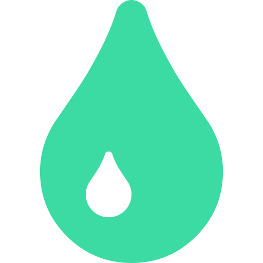

<ion-header>
  <ion-toolbar>
    <ion-buttons>
      <ion-back-button [text]="'Retour'" [color]="'#3CDBA4'" class="back" defaultHref="tabs/tab3"></ion-back-button>
    </ion-buttons>
    <ion-row>
      <ion-col col-5></ion-col>
      <ion-title>
        <ion-col col-2></ion-col>
      </ion-title>
      <ion-col col-5></ion-col>
    </ion-row>
  </ion-toolbar>
</ion-header>

<ion-content padding class="contain" color="lightgray">
  <h1>Suivi de la Glycémie</h1>

  <div class="main">
    <ion-item-sliding *ngFor="let suivis of suivi | async">
      <ion-item detail lines="full">{{suivis.date | date: 'dd/MM/yyyy'}}&nbsp; {{suivis.heure}} &nbsp;{{suivis.taux}}mmol/l</ion-item>
      <ion-item-options side="end">
        <ion-item-option color="danger" (click)="deleteSuivi(suivis.id)">Supprimer</ion-item-option>
      </ion-item-options>
    </ion-item-sliding>
  </div>

</ion-content>
